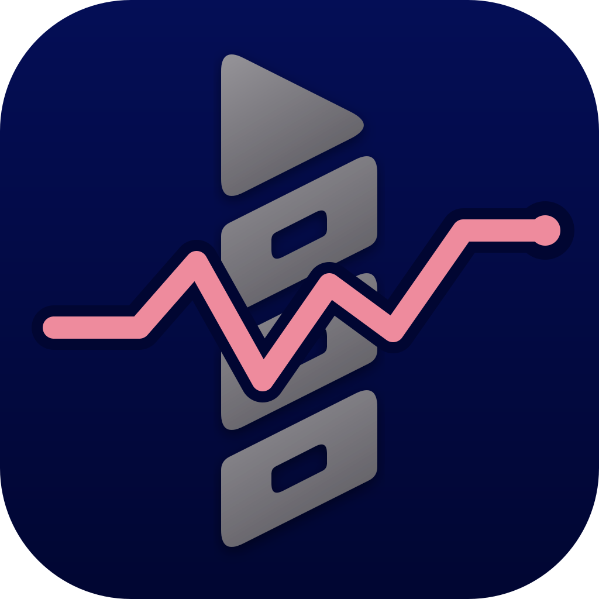
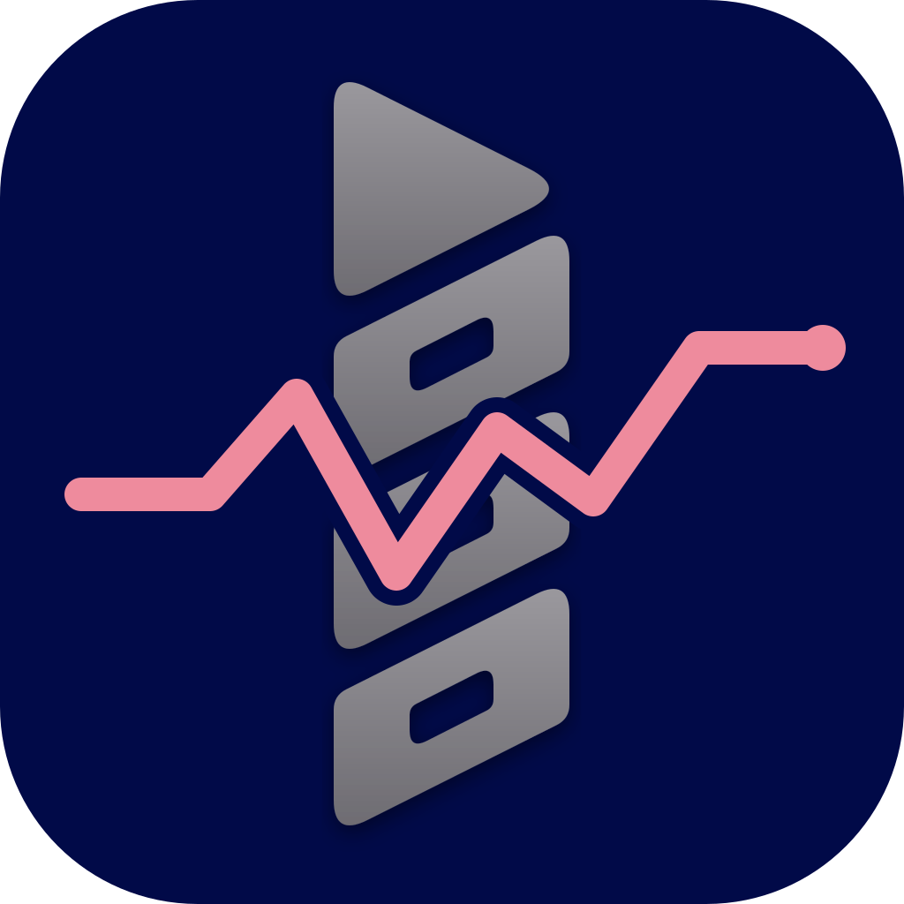

Silo Monitor — Logo Design Concepts
Inspired by Plex Dash: neutral grey Silo mark with the original static telemetry pulse overlaid across it in CPU pink (#ee8b9d), set on a deep navy/midnight blue background (deeper than the original #010d9f).
Option A · Deep Gradient Midnight
Subtle deep navy gradient (#040e56 to #010632) with metallic grey logo and high-contrast pink telemetry overlay.

96px (Home)
48px
32px
Option B · Rich Solid Midnight Navy
Clean solid deep navy (#010a48) with slate-grey Silo elements and crisp gap-isolated pink trace.

96px (Home)
48px
32px